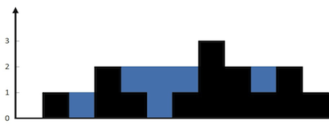

题面
给定 n 个非负整数表示每个宽度为 1 的柱子的高度图，计算按此排列的柱子，下雨之后能接多少雨水。
示例 1：

输入： height = [0,1,0,2,1,0,1,3,2,1,2,1]
输出： 6
解释： 上面是由数组 [0,1,0,2,1,0,1,3,2,1,2,1] 表示的高度图，在这种情况下，可以接 6 个单位的雨水（蓝色部分表示雨水）。示例 2：
输入： height = [4,2,0,3,2,5]
输出： 9提示：
n == height.length
`1 <= n <= 2 104`0 <= height[i] <= 105
分析
- 横向角度
- 求第
i层的水，遍历每个位置，如果当前的高度小于i，并且两边有高度大于等于i的，说明这个地方一定有水，水就可以加 1 - 如果求高度为
i的水，首先用一个变量temp保存当前累积的水，初始化为 0。从左到右遍历墙的高度，遇到高度大于等于i的时候，开始更新temp。更新原则是遇到高度小于i的就把temp加 1，遇到高度大于等于i的，就把temp加到最终的答案ans里，并且temp置零，然后继续循环 - 纵向角度
- 对于每个位置，它能装多少雨水，由左右两边的高度决定。左边就是前缀最大值，右边就是后缀最大值
- 每个位置自身宽度为 1，所以能装多少水 = min(前缀最大值, 后缀最大值) - 自身高度
竖着计算 相向双指针
- 思路
- 对于这个装雨水的问题，每个位置能装多少雨水，由左右两边的高度决定。左边就是前缀最大值（preMax），右边就是后缀最大值（sufMax），每个位置自身宽度为 1，所以能装的水量 = min(preMax, sufMax) - height[i]
- 关键问题：能否不用两遍遍历求出所有前后缀，而是一次遍历就确定每个位置的接水量？
- 设现在算出了前缀
[0, left]的最大高度preMax[left]，以及后缀[right, n-1]的最大高度sufMax[right]。中间的柱子[left+1, right-1]尚未遍历，不知道有多高。在这种情况下，我们能否直接确定left或者right处的接水量？ - 分类讨论：
- 如果
preMax[left] <= sufMax[right]，由于sufMax[right] <= sufMax[left]（包含的数越多，最大值越大），所以preMax[left] <= sufMax[right] <= sufMax[left]，因此min(preMax[left], sufMax[left]) = preMax[left]，left处的接水量就是preMax[left] - height[left] - 如果
preMax[left] > sufMax[right]，由于preMax[left] <= preMax[right]（包含的数越多，最大值越大），所以sufMax[right] < preMax[left] <= preMax[right]，因此min(preMax[right], sufMax[right]) = sufMax[right]，right处的接水量就是sufMax[right] - height[right] - 代码实现
class Solution:
def trap(self, height: List[int]) -> int:
ans = 0
n = len(height)
l = 0
r = n - 1
pre_l, suf_r = 0, 0
while l < r:
pre_l = max(pre_l, height[l])
suf_r = max(suf_r, height[r])
if pre_l <= suf_r: # 现在l的pre < suf，所以可以算出他的面积
ans = ans + (pre_l - height[l])
l = l + 1 # 这个小格的算完了，算下一个
elif pre_l > suf_r:
ans = ans + (suf_r - height[r])
r = r - 1
# 这个精妙的思路，每次l和r的更新，pre和suf都在变化，就像是逐渐了解中间的高度
return ans- 复杂度：时间 O(n)，空间 O(1)
横着计算 单调栈
- 思路
- 与竖着逐列计算不同，单调栈是横着一层一层算水的面积
- 维护一个单调递减栈，每次 pop 出一个"谷底"，以它为底，用左右两堵墙围出一个横向矩形
- 层层叠加，最终填满所有水
- 代码实现
# TODO: 待补充